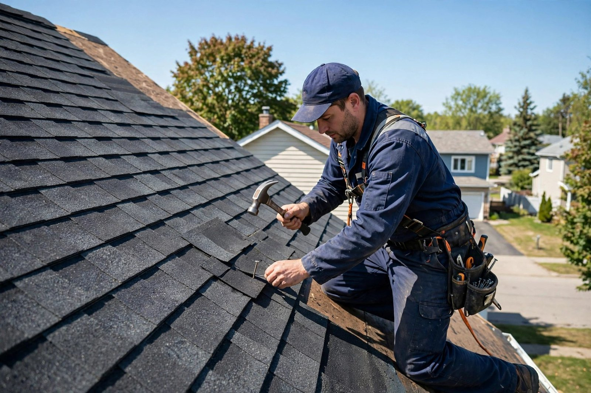
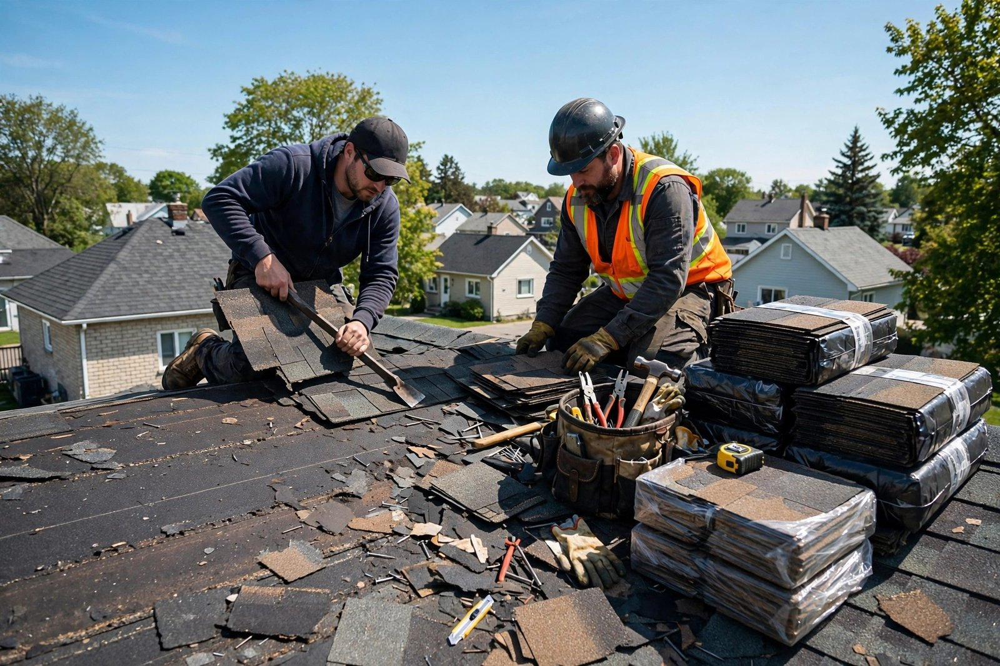
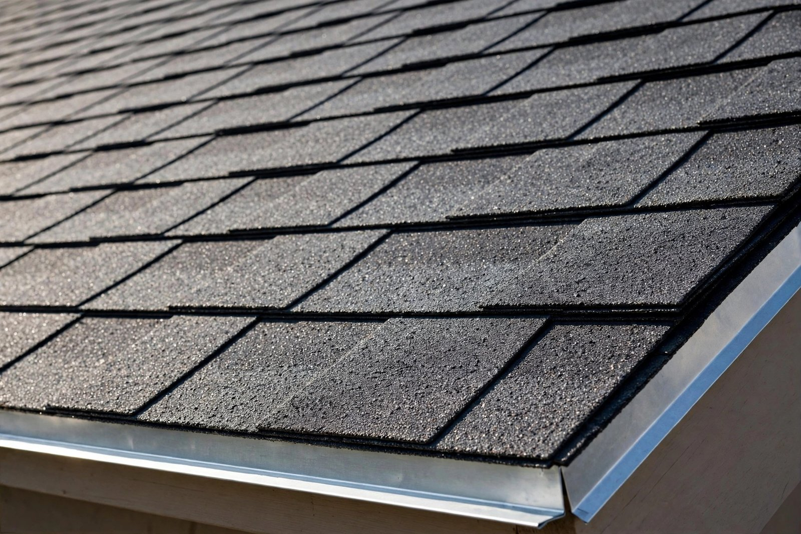
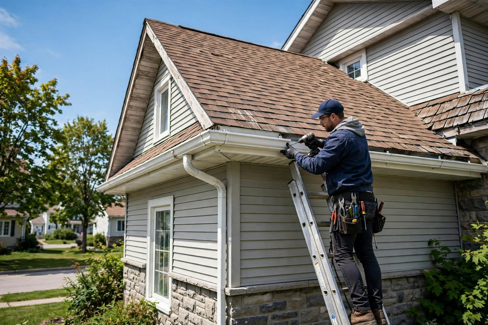

Réfection de toiture
On refait votre toiture au complet — bardeaux retirés, membrane vérifiée, pose propre du début à la fin.

Québec, QC · Couvreur — toitures résidentielles
Réfection de toiture, bardeaux d'asphalte, réparations et gouttières — un travail soigné, une soumission claire, rien d'inutile.
Soumission gratuite
Décrivez-nous votre toiture — on vous dit franchement ce qu'il faut faire et ce que ça coûte, sans engagement.
Ce que nous faisons
On refait votre toiture au complet — bardeaux retirés, membrane vérifiée, pose propre du début à la fin.
Pose et remplacement de bardeaux d'asphalte — un fini droit, des rangées égales, un toit qui a l'air neuf.
Spécialiste des maisons — chaque toiture est évaluée sur place avant qu'on vous propose quoi que ce soit.
Fuites, bardeaux manquants ou endommagés — on répare ce qui peut l'être avant de vous parler de refaire.
Pose et remplacement de gouttières — l'eau dirigée loin de votre maison et de vos fondations.
On regarde, on mesure, on vous explique — et vous décidez. La soumission ne coûte rien.

Pourquoi nous choisir
On croit aux choses simples : regarder la vraie toiture avant de parler de prix, expliquer ce qui est nécessaire — et ce qui ne l'est pas — puis faire un travail soigné qui dure.
Le métier en action


Parlons de votre toiture
Bon à savoir
Réfection de toiture, bardeaux d'asphalte, toitures résidentielles, réparations et entretien, ainsi que la pose de gouttières.
Oui. On évalue votre toiture, on vous explique ce qu'il faut faire et ce que ça coûte — vous décidez ensuite, sans pression.
Nous sommes établis à Québec, QC. Appelez-nous pour savoir si votre secteur est desservi.
Appelez-nous au (514) 772-5180 — on vous répond et on planifie la suite avec vous.
Nous joindre